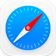

Alt-tab, done right
Alt-tab to any window, not just any app.
On a Mac, Cmd+Tab shows one icon per app, so two Safari windows look like one. DogBar gives every window its own tile, with its name and a preview. Hold Option, tap Tab, let go.
macOS Cmd+Tab

One icon per app. Which Safari window will you get?